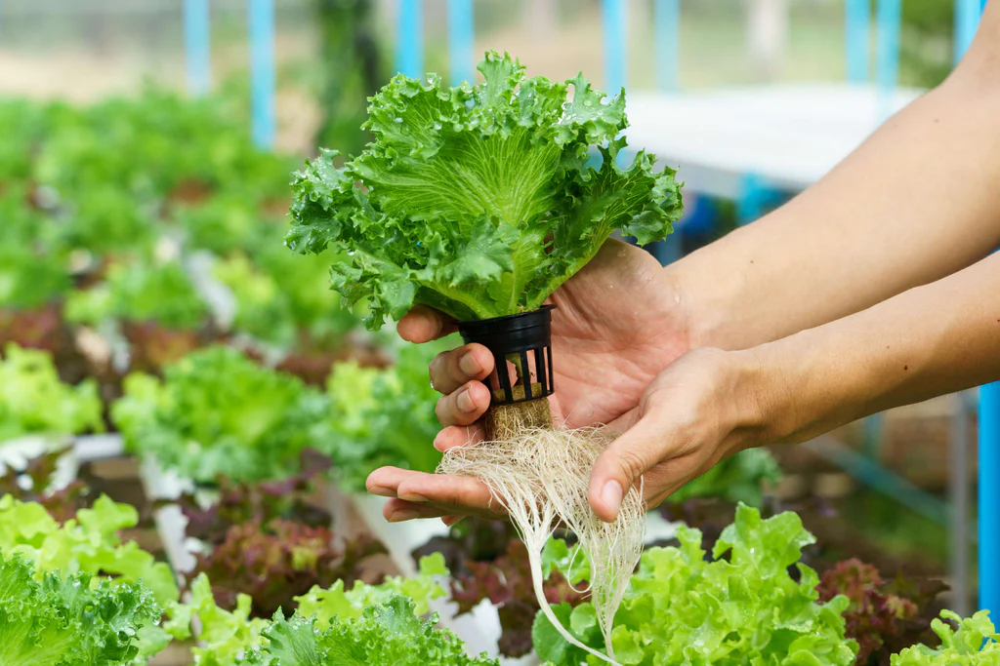
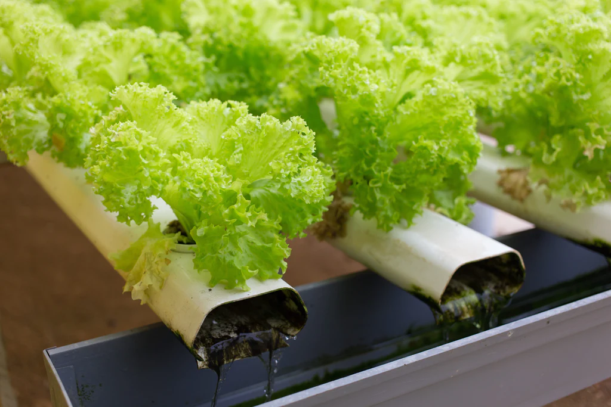
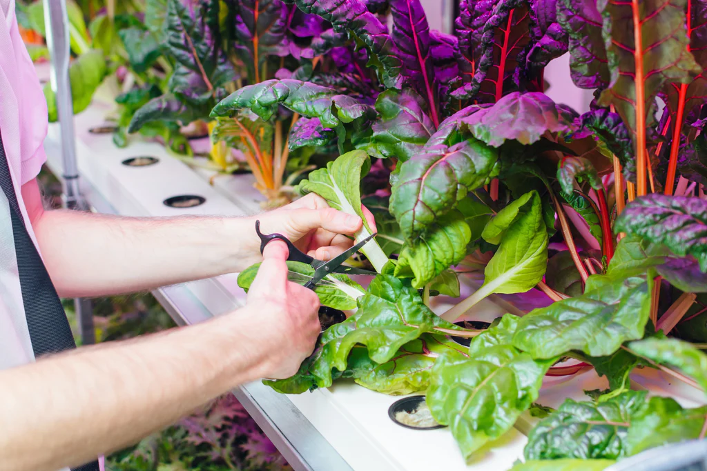
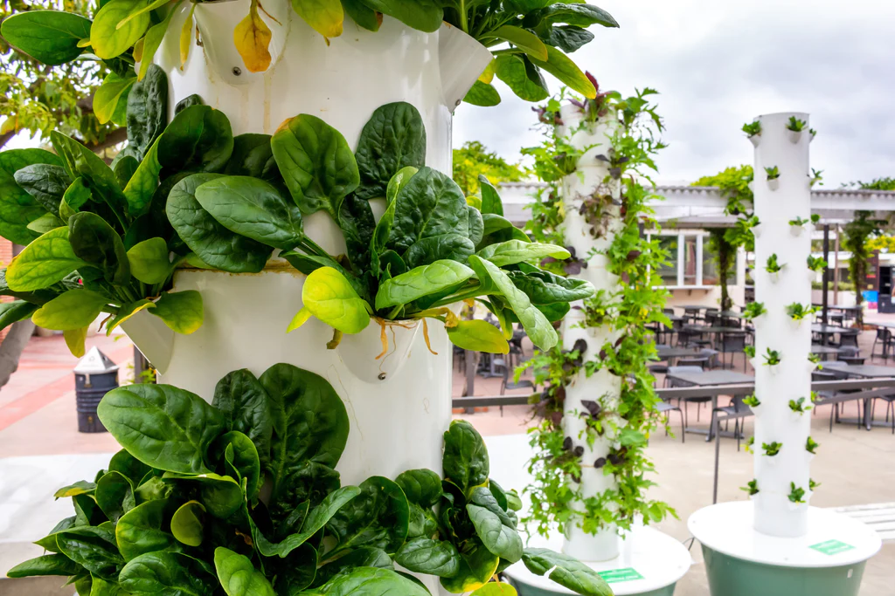

Hydroponics is the art of gardening without soil. Hydroponics is a Latin word meaning “working water.” In the absence of soil, water goes to work providing nutrients, hydration, and oxygen to plant life. From watermelons to jalapeños to orchids, plants flourish under the careful regimen of hydroponics. Using minimal space, 90% less water than traditional agriculture, and ingenious design, hydroponic gardens grow beautiful fruits and flowers in half the time.
Though the technology sounds cutting-edge, the history of hydroponics dates back to the famed Hanging Gardens of Babylon, one of the Seven Wonders of the Ancient World. The Euphrates River was diverted into channels that cascaded down the lavish garden walls. In the 13th century, Marco Polo wrote of witnessing floating gardens in China. However, hydroponics is far from merely an innovation of the ancient ages. In the 1990s, NASA grew aeroponic bean seedlings in zero gravity aboard a space station, opening up the possibility of sustainable agriculture in space. Hydroponics continues to be a timeless and dynamic method of water conservation and crop production.
Hydroponics is the cultivation of plants without using soil. Hydroponic flowers, herbs, and vegetables are planted in inert growing media and supplied with nutrient-rich solutions, oxygen, and water. This system fosters rapid growth, stronger yields, and superior quality. When a plant is grown in soil, its roots are perpetually searching for the necessary nutrition to support the plant. If a plant’s root system is exposed directly to water and nutrition, the plant does not have to exert any energy in sustaining itself. The energy the roots would have expended acquiring food and water can be redirected into the plant’s maturation. As a result, leaf growth flourishes as does the blooming of fruits and flowers.
Plants sustain themselves by a process called photosynthesis. Plants capture sunlight with chlorophyll (a green pigment present in their leaves). They use the light’s energy to split water molecules they’ve absorbed via their root system. The hydrogen molecules combine with carbon dioxide to produce carbohydrates, which plants use to nourish themselves. Oxygen is then released into the atmosphere, a crucial factor in preserving our planet's habitability. Plants do not need soil to photosynthesize. They need the soil to supply them with water and nutrients. When nutrients are dissolved in water they can be applied directly to the plant’s root system by flooding, misting, or immersion. Hydroponic innovations have proven direct exposure to nutrient-filled water can be a more effective and versatile method of growth than traditional irrigation.
Hydroponic systems work by allowing minute control over environmental conditions like temperature and pH balance and maximized exposure to nutrients and water. Hydroponics operates under a very simple principle: provide plants exactly what they need when they need it. Hydroponics administer nutrient solutions tailored to the needs of the particular plant being grown. They allow you to control exactly how much light the plants receive and for how long. pH levels can be monitored and adjusted. In a highly customized and controlled environment, plant growth accelerates.
By controlling the environment of the plant, many risk factors are reduced. Plants grown in gardens and fields are introduced to a host of variables that negatively impact their health and growth. Fungus in the soil can spread diseases to plants. Wildlife like rabbits can plunder ripening vegetables from your garden. Pests like locusts can descend on crops and obliterate them in an afternoon. Hydroponic systems end the unpredictability of growing plants outdoors and in the earth. Without the mechanical resistance of the soil, seedlings can mature much faster. By eliminating pesticides, hydroponics produce much healthier and high-quality fruits and vegetables. Without obstacles, plants are free to grow vigorously and rapidly.
To maintain a flourishing hydroponic system, you will need to become acquainted with a few components that make hydroponics run efficiently.
Hydroponic plants are often grown in inert media that support the plant’s weight and anchor its root structure. Growing media is the substitute for soil, however, it does not provide any independent nutrition to the plant. Instead, this porous media retains moisture and nutrients from the nutrient solution which it then delivers to the plant. Many growing media are also pH-neutral, so they will not upset the balance of your nutrient solution. There are a host of different media to choose from, and the specific plant and hydroponic system will dictate which media best suits your endeavor. Hydroponic growing media is widely available both online and at local nurseries and gardening stores.
Plants that are submerged in water can quickly drown if the water is not sufficiently aerated. Air stones disperse tiny bubbles of dissolved oxygen throughout your nutrient solution reservoir. These bubbles also help evenly distribute the dissolved nutrients in the solution. Air stones do not generate oxygen on their own. They need to be attached to an external air pump via opaque food grade plastic tubing (the opacity will prevent algae growth from setting in). Air stones and air pumps are popular aquarium components and can be purchased easily at pet stores.
Net pots are mesh planters that hold hydroponic plants. The latticed material allows roots to grow out of the sides and bottom of the pot, giving greater exposure to oxygen and nutrients. Net pots also provide superior drainage compared to traditional clay or plastic pots.
There are hundreds of hydroponic methods, but all of them are a modification or combination of six basic hydroponic systems.
Deep water culture hydroponics are simply plants suspended in aerated water. Deep water culture systems, also known as a DWC system, are one of the easiest and most popular methods of hydroponics on the market. A DWC system dangles net pots holding plants over a deep reservoir of oxygen-rich nutrient solution. The plant’s roots are submerged in the solution, providing it with perpetual access to nutrition, water, and oxygen. Deep water culture is considered by some to be the purest form of hydroponics.
Since the root system is suspended in water at all times, proper water oxygenation is vital to the plant’s survival. If there is not enough oxygen supplied to the plant’s roots, the plant will drown in the solution. Add an air stone connected to an air pump at the bottom of the reservoir to supply oxygenation to the entire system. The bubbles from the air stone will also help circulate the nutrient solution.
It is very easy to assemble a deep water culture system at home or in a classroom without needing expensive hydroponics equipment. You can use a clean bucket or old aquarium to hold the solution and place a floating surface like styrofoam on top to house the net pots. Plants in DWC systems should only have their roots submerged in the solution. No part of the stem or vegetation should be underwater. You can even leave about an inch and a half of the roots above the waterline. The air stone bubbles will pop out of the surface and splash onto the exposed roots, so they will not be at risk of drying out.
In a wick system, plants are nestled in growing media on a tray that sits on top of a reservoir. This reservoir houses a water solution with dissolved nutrients. Wicks travel from the reservoir to the growing tray. Water and nutrients flow up the wick and saturate the growing media around the root systems of the plants. These wicks can be made of material as simple as rope, string, or felt. Wick systems are by far the most simple form of hydroponics. Wick systems are passive hydroponics - meaning they don’t require mechanical parts like pumps to function. This makes it ideal for situations where electricity is either unreliable or unavailable.
Wicks systems work by a process called capillary action. The wick absorbs the water it’s immersed in like a sponge, and when it comes in contact with the porous growing media, it transfers the nutrient solution. Wick system hydroponics only work if accompanied by growing media that is able to facilitate nutrient and water transference. Coco coir (fibers from the outer husks of coconuts) have excellent moisture retention and the added benefit of being pH neutral. Perlite is also pH neutral and extremely porous, making it ideal for wicking systems. Vermiculite is also very porous, and also possesses a high cation-exchange capacity. This means it can store nutrients for later use. These three growing media are the most suitable for hydroponic wick systems.
Wick systems work quite slowly compared to other hydroponic systems, which does limit what is practical to grow with them. You’ll want to make sure for every plant in the growing tray you have at least one wick running from the reservoir. These wicks should be placed close to the root system of the plant. Though capable of functioning with aeration, many people do choose to add an air stone and air pump to the wick system’s reservoir. This adds extra oxygenation to the hydroponic system.
Nutrient film technique (NFT) systems suspend plants above a stream of continuously flowing nutrient solution that washes over the ends of the plant’s root systems. The channels holding the plants are tilted, allowing water to run down the length of the grow tray before draining into the reservoir below. The water in the reservoir is then aerated via air stone. A submersible pump then pumps the nutrient-rich water out of the reservoir and back to the top of the channel. The nutrient film technique is a recirculating hydroponic system.
Unlike with deep water culture hydroponics, the roots of the plants in an NFT system are not immersed in water. Instead, the stream (or “film”) only flows over the ends of their roots. The roots’ tips will wick the moisture up into the plant, while the exposed root system is given plenty of access to oxygen. The bottoms of the channels are grooved, so the shallow film can pass over the root tips with ease. This also prevents water from pooling or damming up against the root systems.
Even though nutrient film technique systems are constantly recycling water, it is wise to drain the reservoir and replenish the nutrient solution every week or so. This ensures your plants are being delivered ample nutrition. NFT channels must be angled at a gradual slope. If it’s too steep, the water will rush down the channel without properly nourishing the plants. If too much water is being pumped through the channel, the system will overflow and the plants can drown. NFT hydroponics are popular commercial systems, as they can support several plants per channel and can easily be mass-produced. Nutrient film technique systems are best suited for lightweight plants, like mustard greens, kale, lettuce, spinach as well as fruits like strawberries. Heavier fruiting plants like tomatoes and cucumbers will require trellises to support the excess weight.
Ebb and flow hydroponics work by flooding a grow bed with a nutrient solution from a reservoir below. The submersible pump in the reservoir is equipped with a timer. When the timer starts, the pump fills the grow bed with the water and nutrients. When the timer stops, gravity slowly drains the water out of the grow bed and flushes it back into the reservoir. The system is equipped with an overflow tube to ensure flooding doesn’t surpass a certain level and damage the stalks and fruits of the plants. Unlike the previous systems mentioned, the plants in an ebb and flow system are not constantly exposed to water. While the grow bed is flooded, the plants drink up the nutrient solution through their root systems. When the water ebbs and the grow bed empties, the roots dry out. The dry roots then oxygenate in the interval before the next flood. The length of time between floods is dictated by the size of your grow bed and the size of your plants.
Ebb and flow systems (also called flood and drain systems) are one of the most popular hydroponic growing methods. The abundance of oxygen and nutrition the plants are supplied with encourages quick and vigorous growth. The ebb and flow system is easily customizable and versatile. The grow bed can be filled with an assortment of net pots and a variety of fruits and vegetables. Perhaps more than any other hydroponic system, the ebb and flow system allows you to experiment with your plants and media.
Ebb and flow systems can accommodate almost any type of vegetation. Your primary limitation is the size and depth of your grow tray. Root vegetables will require a much deeper bed than lettuce or strawberries. Tomatoes, peas, beans, cucumbers, carrots, and peppers are all popular ebb and flow crops. In fact, you can even attach trellises directly to the grow bed. “Grow rocks” and expanded clay pebbles (hydroton) are some of the most popular growing media in ebb and flow hydroponics. These are cleanable and reusable, lightweight, and while they do retain moisture they will also drain. This is an important quality in ebb and flow systems.
In a hydroponic drip system, the aerated and nutrient-rich reservoir pumps solution through a network of tubes to individual plants. This solution is dripped slowly into the growing media surrounding the root system, keeping the plants moist and well-nourished. Drip systems are the most popular and widespread method of hydroponics, especially among commercial growers. Drip systems can be individual plants or massive irrigation operations.
There are two configurations of drip system hydroponics: recovery and non-recovery. In recovery systems, more popular with smaller, at-home growers, the excess water is drained from the grow bed back into the reservoir to be recirculated during the next drip cycle. In non-recovery systems, the excess water drains out of the growing media and runs to waste. This method is more popular among commercial growers. Though non-recovery drip systems can sound wasteful, large-scale growers are very conservative with water usage. These drip systems are designed only to deliver precisely the amount of solution required to keep the growing media around the plant dampened. Non-recovery drip systems employ elaborate timers and feeding schedules to keep waste to a minimum.
If you are growing plants in a recovery drip system, you will need to be attuned to the fluctuations in the pH of the nutrient solution. This is true of any system where wastewater re-circulates into the reservoir. Plants will deplete the nutrient content of the solution as well as alter the pH balance, so the grower will need to monitor and adjust the solution reservoir more than they would need to in a non-recovery system. Growing media can also become oversaturated with nutrients, so they will need to be washed and replaced periodically.
Aeroponics systems suspend plants in the air and expose the naked roots to a nutrient-filled mist. Aeroponics systems are enclosed frameworks, like cubes or towers, that can hold a multitude of plants at once. Water and nutrients are stored in a reservoir, and then pumped to a nozzle that atomizes the solution and distributes it as a fine mist. The mist is usually released from the top of the tower, allowing it to cascade down the chamber. Some aeroponics continuously mist the plant’s roots, much like NFT systems expose the roots to the nutrient film at all times. Others function more like the ebb and flow system, spraying the roots with mist in intervals. Aeroponics do not need substrate media to survive. The root’s constant exposure to air allows them to drink in oxygen and grow at an accelerated rate.
Aeroponics systems use less water than any other form of hydroponics. In fact, it takes 95% less water to grow a crop aeroponically than in an irrigated field. Their vertical structure is designed to take up minimal room and allows for numerous towers to be housed in a single location. With aeroponics, great yields can be produced even in confined spaces. Furthermore, because of their maximized exposure to oxygen, aeroponic plants grow faster than other hydroponically grown plants.
Aeroponics allow for simple harvesting year-round. Vine plants and nightshades like tomatoes, bell peppers, and eggplants all perform well in an aeroponic environment. Lettuce, baby greens, herbs, watermelons, strawberries, and ginger all also flourish. However, fruiting trees are too large and heavy to be grown aeroponically, and underground plants with extensive root systems like carrots and potatoes cannot be grown.
The invigorating powers of water are at the very core of hydroponics. Water bathes your hydroponic garden in nutrients, vitalizing them and promoting their vibrant growth. If you are truly invested in the health of your plants, you should equally care about the purity of the water sustaining them. Unfortunately, most water is full of contaminants. Municipal water suppliers disinfect water reservoirs with chlorine. According to the U.S. Geological Survey, 85% of the water in the United States is hard water (meaning it contains elevated levels of calcium and magnesium). Industrial spills, agricultural runoff, and waste in landfills can leach chemicals and VOCs into the groundwater supply
Reverse osmosis, (also called RO), eliminates 98% of all impurities from water by forcing it through a semipermeable membrane. Reverse osmosis strips water of heavy metals, salts, bacteria, and total dissolved solids (TDS). The result is water of remarkable purity. Using RO water for hydroponics ensures that your plants are drinking up only the nutrients you want them too. The vast majority of commercial hydroponic operations use RO water to sustain their crops. Much like hydroponics proves there is a superior way to grow plants, reverse osmosis has proven there is a superior way to facilitate this growth.
Reverse osmosis water allows you to start with a blank slate and add precise levels of nutrients, promoters, and pH adjusters to your water. From this neutral base you can construct the ideal nutrient solution. For example, if you live in an area with hard water, your water will already contain high levels of calcium. Many hydroponic nutrient blends contain calcium, as it does encourage plant growth. However, adding a calcium-rich solution to hard water will result in nutrient imbalance. It is also much harder to measure nutrient levels in water with high levels of TDS. Most manufacturer's instructions for nutrient solutions are based on RO water. So, if you are trying to bring the water to 800ppm of nutrients, and the water already exists at 200ppm of TDS, you will have to approximate. The results will inevitably be inaccurate. Reverse osmosis water is also lower in pH. Plants prefer acidic water, and using RO water to hydrate your crops will lessen the amount of pH regulation incumbent on you as a grower.
Controlling the nutrient balance and pH level of your water is an integral component to your hydroponics’ success. If your plants are not receiving proper nutrition, it doesn’t matter how well your hydroponics system is running. A reverse osmosis system ensures that your plants are only absorbing proper nutrients dissolved in water of the highest purity.